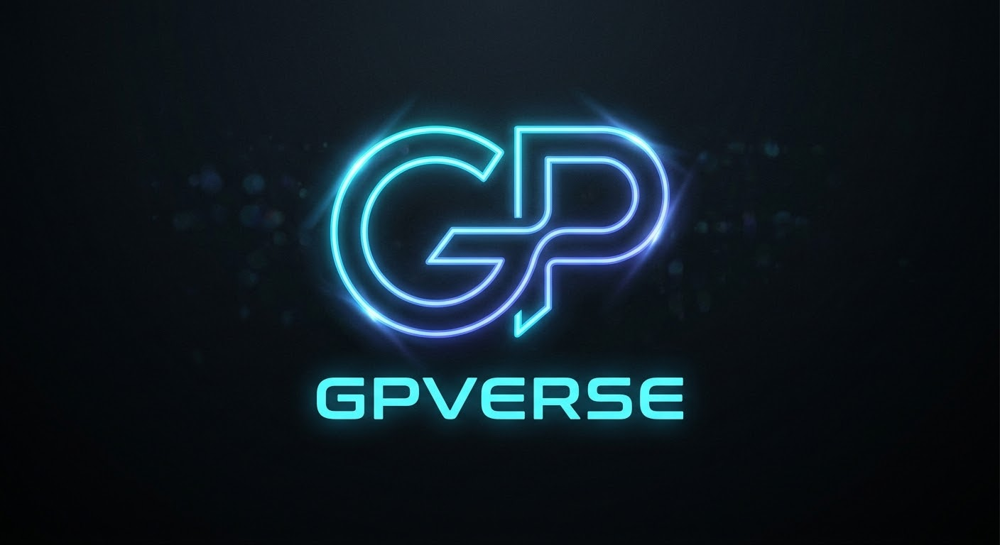

Studio di registrazione per il podcast. Usa le cuffie: il microfono deve sentire solo la tua voce, la musica la mixa OnAir.
V2.9.0Nessun testo. Incolla la scaletta o il testo della puntata con ✎ Modifica testo, oppure carica un file .txt.
Nel testo puoi mettere i segnali [SIGLA], [SOTTOFONDO], [CAPITOLO]: quando la riga di lettura li raggiunge, OnAir li lancia da solo.
[SIGLA] fa partire la sigla · [SOTTOFONDO] avvia il sottofondo · [STOP SOTTOFONDO] lo mette in pausa · [CAPITOLO] lancia il prossimo capitolo · [CAPITOLO 2] lancia il capitolo 2 · [STOP CAPITOLO] lo ferma · [PAUSA] ferma lo scorrimento del testo · [ISCRIVITI] lancia l'animazione «Iscriviti».
Il video si registra con l'effetto già applicato. Tieni OnAir in primo piano mentre registri: se la finestra è nascosta il browser rallenta il video.
Durante la sigla il sottofondo resta spento: lo fai partire tu alla fine, con B.
Mentre suona un capitolo il sottofondo si ferma, poi riparte da dove era rimasto.
Questi livelli valgono per l'ascolto e sono il punto di partenza del mix finale. Dopo la registrazione li ritocchi in Sessioni, con l'anteprima, prima di esportare. ↺ riporta la fonte al suo livello predefinito, che imposti con ★ dentro «Gain ed EQ». Mute spegne solo l'ascolto in cuffia.
Clicca sull'onda per riascoltarti da quel punto. Qui senti solo la voce; la musica torna al punto giusto quando riparti.
Ogni registrazione resta salvata in questo browser: puoi rifare il mix e riesportarla quando vuoi.
Lo «studio» è tutto il resto tranne le registrazioni: sigla, sottofondi, capitoli, testo del teleprompter, logo, sfondo, mixer, disposizioni, tasti e piattaforme. Salvalo in un file .onair e aprilo su un altro dispositivo (PC, tablet). Microfono e webcam scelti restano quelli del dispositivo. Le singole registrazioni si trasferiscono da Sessioni.
Scegli un set pronto o creane uno tuo: ordine (▲▼), larghezza e visibilità di ogni pannello. Metti il teleprompter dove guardi, cioè sotto la webcam.
Clicca il tasto accanto a un'azione e premi quello nuovo. Se è già usato, i due tasti si scambiano. I tasti 1–9 restano ai capitoli.